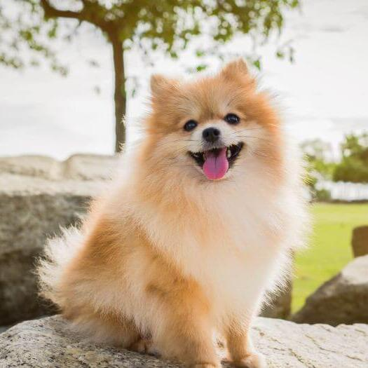

Чіхуахуа

Чихуахуа (ісп. Chihuahua, МФА: [tʃiˈwawa], чива́ва) — найменша порода собак, названа на честь мексиканського штату Чивава, де вона була виявлена приблизно в 1850 році.
Тер'єр
Тер'єр (англ. та фр. terrier), походить від лат. terra — земля) — собака однієї з багатьох порід собак, що належить до групи порід тер'єр. Типова більшість тер'єрів невеликі, дуже гнучкі, активні та безстрашні собаки.
Шпіц
Тер'єр (англ. та фр. terrier), походить від лат. terra — земля) — собака однієї з багатьох порід собак, що належить до групи порід тер'єр. Типова більшість тер'єрів невеликі, дуже гнучкі, активні та безстрашні собаки.
Пудель

Пу́дель ( нім. Pudel , від puddeln — «плескатися у воді») — порода собак . Спочатку пудель був робочим собакою, зокрема використовувався на полюванні. Сучасні пуделі – переважно декоративні собаки.
Мопс

Мопс ( нідерл. mops ) - порода декоративних собак . Мопси були привезені з Китаю до Європи в XVI столітті і були популярними в Західній Європі , потрапивши туди через Нідерланди .
Бішон Оррізе
Мопс ( нідерл. mops ) - порода декоративних собак . Мопси були привезені з Китаю до Європи в XVI столітті і були популярними в Західній Європі , потрапивши туди через Нідерланди .
Ши-тцу
Ши-тцу вважається традиційно китайської собакою. Однією з родин ши-тцу вважається Тибет. В 1653 тибетський далай-лама подарував китайському імператорові кілька собак ши-цу, які перетворили ши-тцу в заборонену породу, що належить виключно імператорської сім'ї.
Пекінес
Пекінес — декоративна порода собак, виведена в Китаї, одна з найдавніших порід собак.
Болонка
Пекінес — декоративна порода собак, виведена в Китаї, одна з найдавніших порід собак.
Спаніель
Спанієль (англ. Spaniel) — група порід мисливських собак. Судячи з назви, собаки типу спанієлів походять з Іспанії, оскільки саме це слово означає «іспанський».